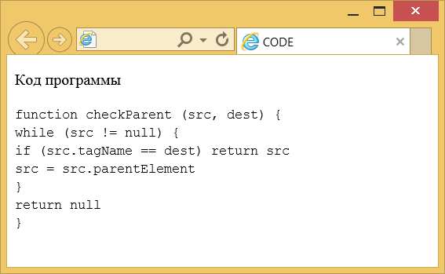

Элемент <code>
| Internet Explorer | Chrome | Opera | Safari | Firefox |
| 3 | 1 | 7 | 1 | 1 |
| Android | Firefox Mobile | Opera Mobile | Safari Mobile |
| 1 | 1 | 7 | 1 |
Элемент <code> предназначен для отображения одной или нескольких строк текста, который представляет собой программный код. Сюда относятся имена переменных, ключевые слова, тексты функции и т. д. Браузеры обычно отображают содержимое контейнера <code> как моноширинный текст уменьшенного размера.
В отличие от элемента <pre> дополнительные пробелы внутри контейнера <code> не учитываются, так же, как и переносы текста. Поэтому для создания переносов используйте <br> или <p>.
Синтаксис
<code>Текст</code>Закрывающий тег
Аттрибуты
Для этого элемента доступны универсальные атрибуты и события.
Пример
<!DOCTYPE HTML>
<html>
<head>
<meta charset="utf-8">
<title>CODE</title>
</head>
<body>
<p>Код программы</p>
<p><code>
function checkParent (src, dest) {<Br>
while (src != null) {<Br>
if (src.tagName == dest) return src<Br>
src = src.parentElement<Br>
}<Br>
return null<Br>
}</code></p>
</body>
</html>Результат данного примера показан ниже.

Рис. 1. Вид текста в контейнере <code>
Спецификация ?
| Спецификация | Статус |
|---|---|
| WHATWG HTML Living Standard | Живой стандарт |
| HTML5 | Возможная рекомендация |
| HTML 4.01 Specification | Рекомендация |
Спецификация
Каждая спецификация проходит несколько стадий одобрения.
- Recommendation (Рекомендация) — спецификация одобрена W3C и рекомендована как стандарт.
- Candidate Recommendation (Возможная рекомендация) — группа, отвечающая за стандарт, удовлетворена, как он соответствует своим целям, но требуется помощь сообщества разработчиков по реализации стандарта.
- Proposed Recommendation (Предлагаемая рекомендация) — на этом этапе документ представлен на рассмотрение Консультативного совета W3C для окончательного утверждения.
- Working Draft (Рабочий проект) — более зрелая версия черновика после обсуждения и внесения поправок для рассмотрения сообществом.
- Editorʼs draft (Редакторский черновик) — черновая версия стандарта после внесения правок редакторами проекта.
- Draft (Черновик спецификации) — первая черновая версия стандарта.
Особняком стоит живой стандарт HTML (Living) — он не придерживается традиционной нумерации версий, поскольку находится в постоянной разработке и обновляется регулярно.